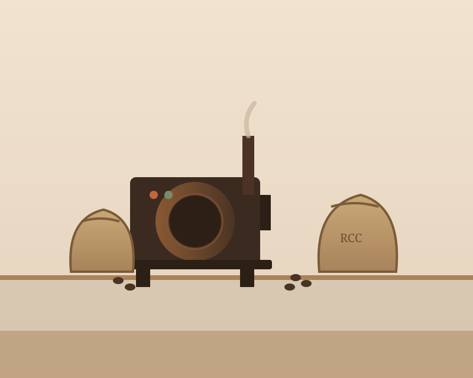

Our Story
Riverside Coffee Co. started in 2016 in Priya Nakamura's garage, where a single one-pound sample roaster and a lot of trial and error turned into Saturday-morning pop-up sales at the Ashford Falls farmers market. Within a year, the line for her Willow River blend was longer than the line for produce, and by 2018 she and her brother Dev had signed a lease on a storefront two blocks from the river, where the café still sits today.
We buy green coffee through direct-trade relationships with three family farms in Huila, Colombia and Yirgacheffe, Ethiopia, paying well above commodity price and visiting each farm at least once a year. Everything is roasted in small batches on Clementine, our refurbished 1974 drum roaster, so the beans in your bag were almost certainly roasted within the last two weeks.
The café itself has become something of a living room for the neighborhood: local painters rotate work on our walls every quarter, the Thursday night folk session has been running since 2019, and our partnership with Ashford Falls Bakehouse means something warm is always coming out of an oven somewhere nearby.

Come Say Hello
We're open every day of the week — find our hours, address, and how to reach us.